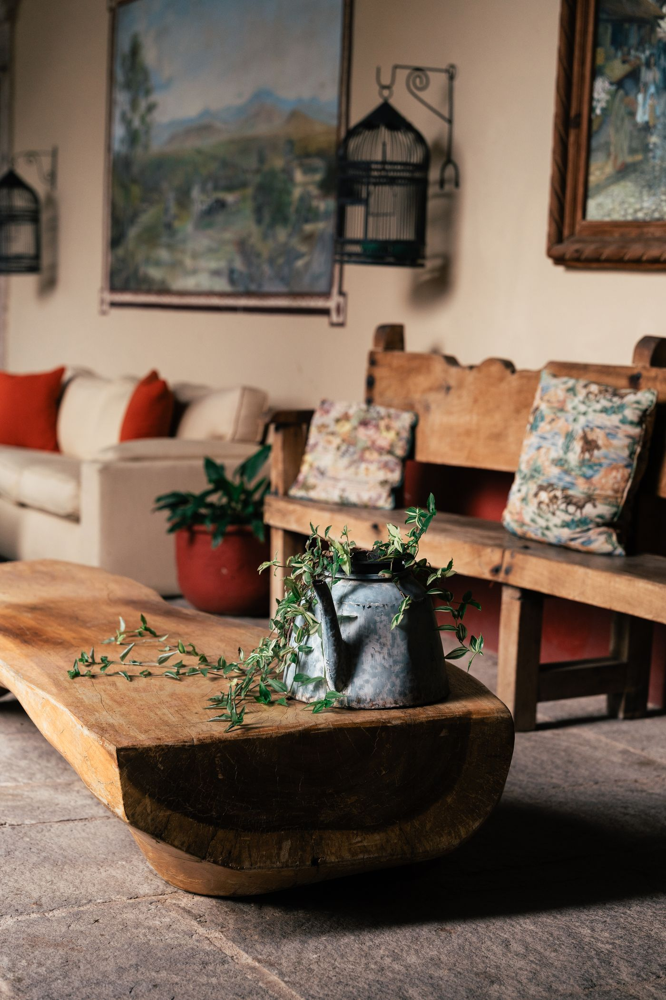
Stand-in photoFurniture
Dining tables, live-edge river tables, benches, beds and casework.
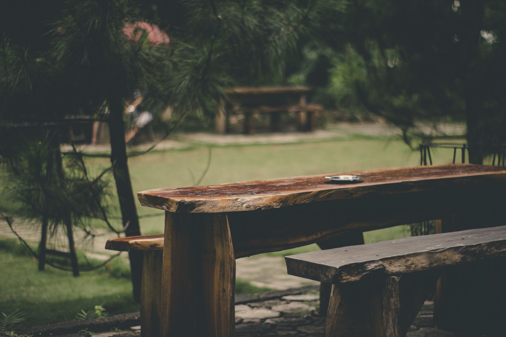
Built one piece at a time in a small shop in Westover, with a soft spot for live-edge river tables.
Start a commissionEverything is made to order. If what you have in mind isn't here, ask anyway.

Stand-in photoDining tables, live-edge river tables, benches, beds and casework.
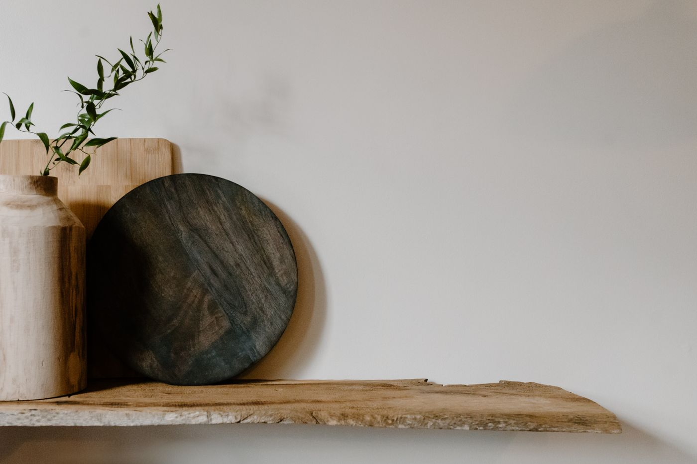
Stand-in photoKitchens, library walls, window seats and live-edge shelves.
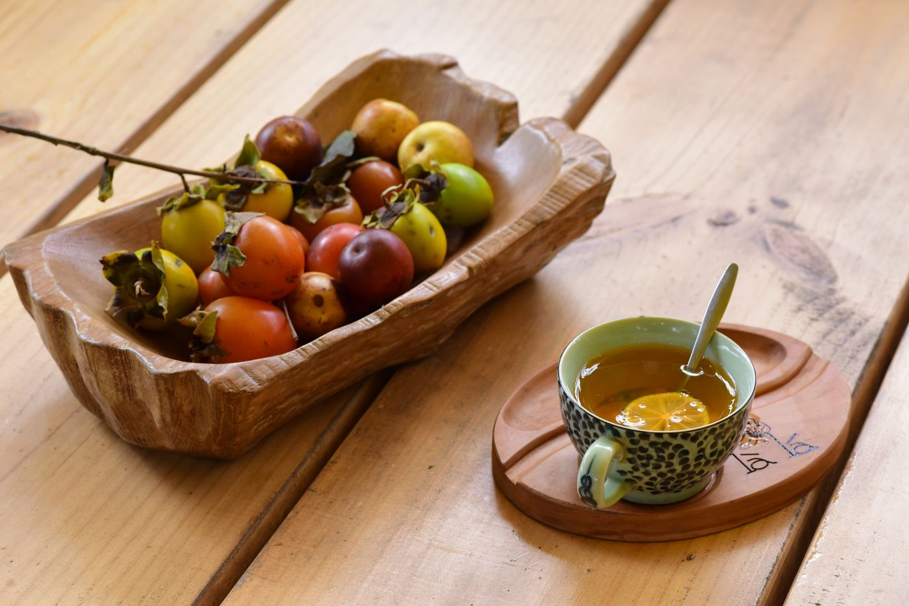
Stand-in photoCutting boards, bowls, boxes and live-edge centerpieces.
It starts with a single black walnut, often one a storm brought down or that had to come out anyway. The crown is cut away, leaving the trunk.
At the sawmill the log is sliced lengthwise into thick slabs, bark still on. The slabs are kept in order so neighbors can be paired later.
The slabs are stacked with spacers so air moves between them, then left to dry, roughly a year per inch of thickness, before a last stint in the kiln.
Two neighboring slabs from the stack, live edges turned to face each other. The bark comes off by hand so the edge keeps its shape.
A router rides a sled over each slab, taking off a little at a time until the faces are dead flat and the boards no longer rock.
A melamine form goes up around the slabs, its seams taped and sealed so not a drop of epoxy can escape.
Tinted epoxy runs down the gap between them, poured in layers so it cures clear and doesn't crack from its own heat.
A quick pass with a torch draws trapped air to the surface and pops it. Then the table sits for three days to harden before the mold comes off.
Where the wood has checked, a walnut bowtie is cut in across the crack so it can never open further.
The whole top is sanded from 80 grit up to 400, then oil goes on by hand, darkening the grain and bringing up the shine.
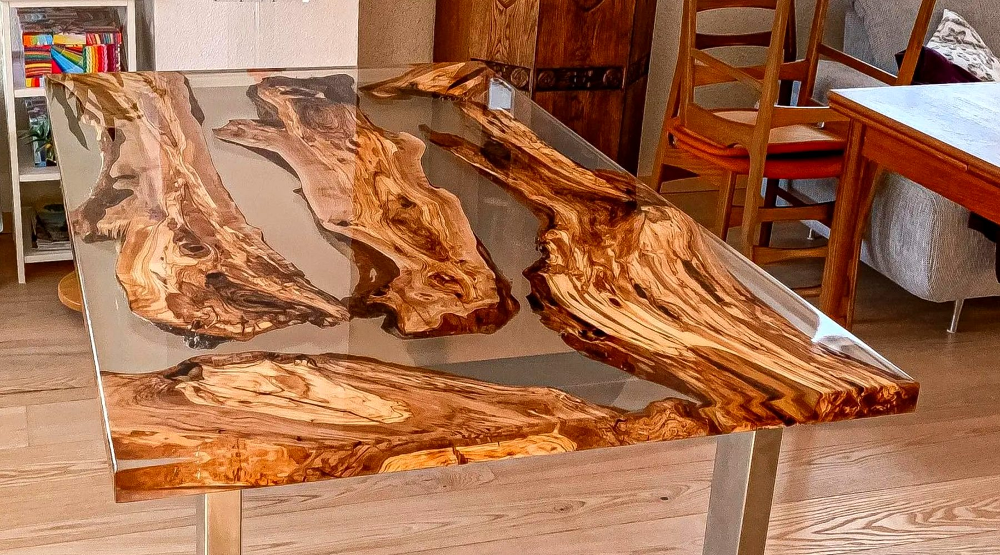
Stand-in photoThe natural edge of the tree stays where it grew, and a river of resin runs between the slabs. Every slab is different, so each table is laid out around the wood you pick, with the river, color and shape decided together before anything is poured.
Rounds and short slabs with the bark left on, sized for the middle of the table and finished to take candles, greenery or a bowl of fruit. Order one with a river table and it's cut from the same slabs, so the grain carries through.
Ask about a centerpiece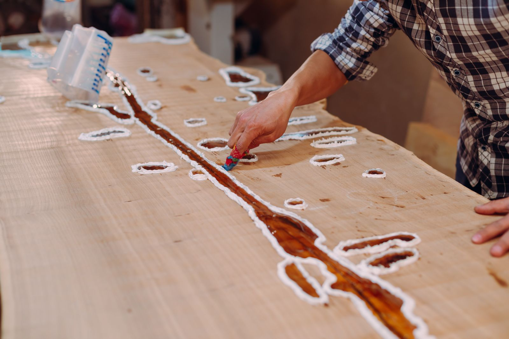
Stand-in photoI want a table to outlast me. That means doing it the slow way, with joints you could hand down to your grandkids.
John Goldsborough
Whole tables, rounds and squares, and the smaller things made from what's left of the slab. Each one follows the shape the tree gave it.
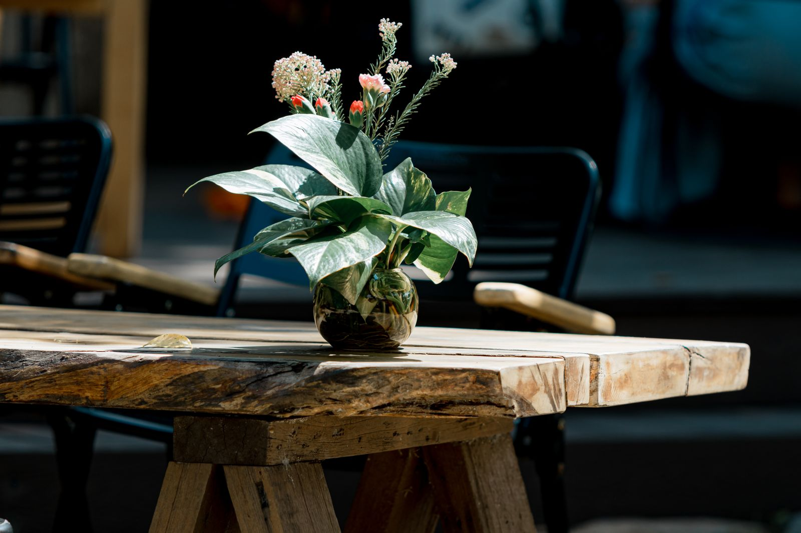
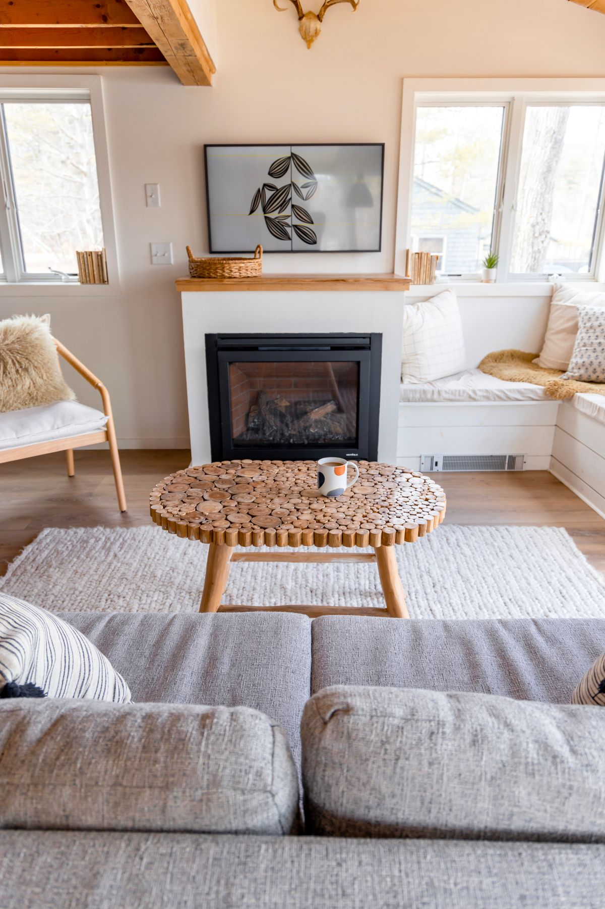
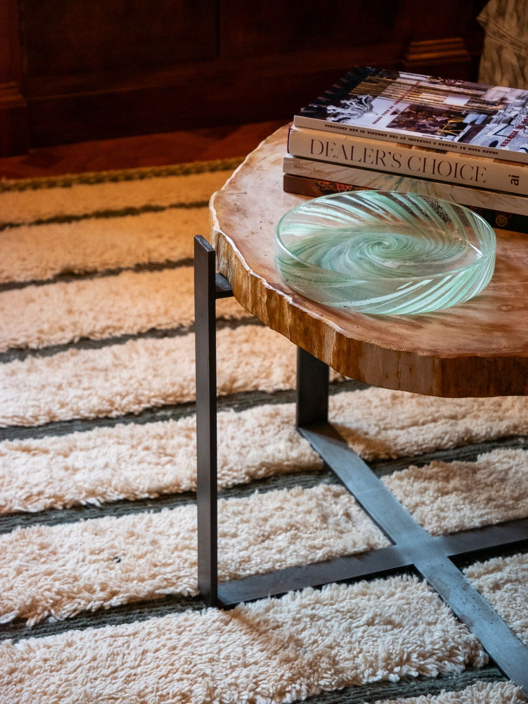
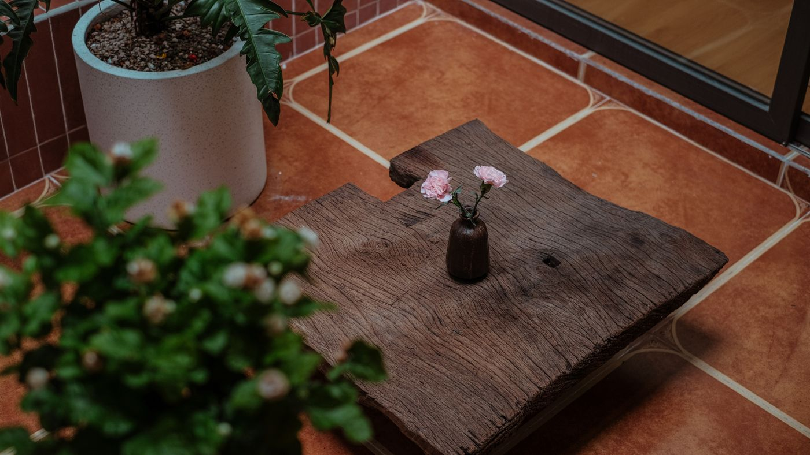
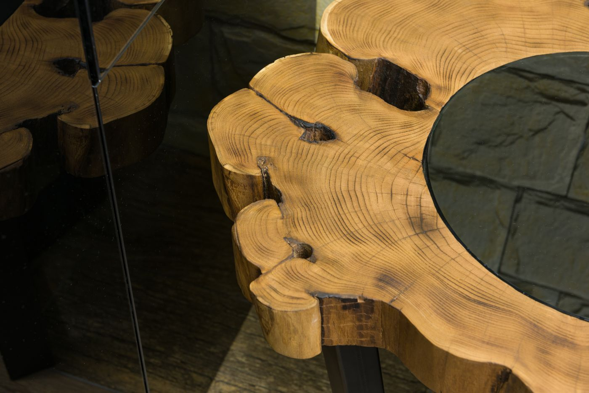
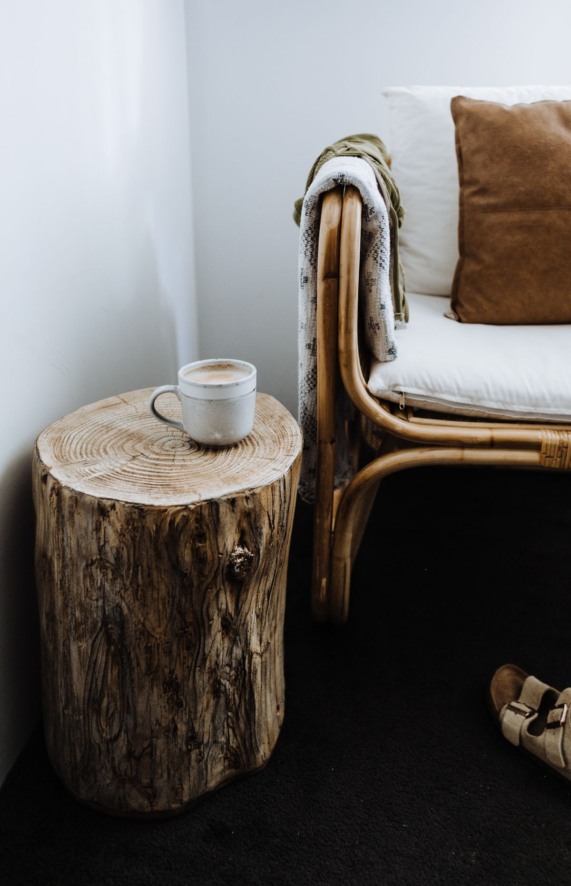
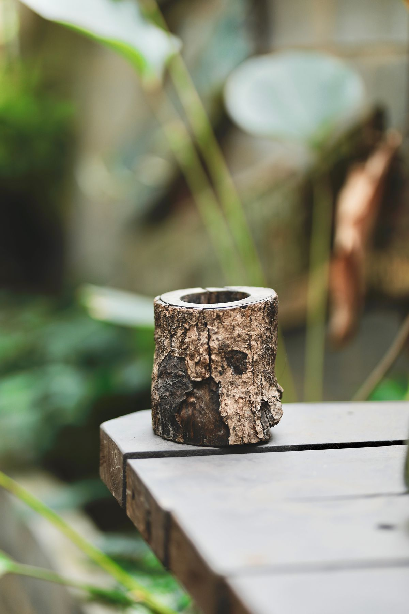
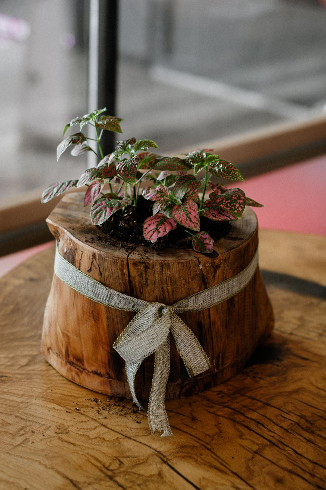
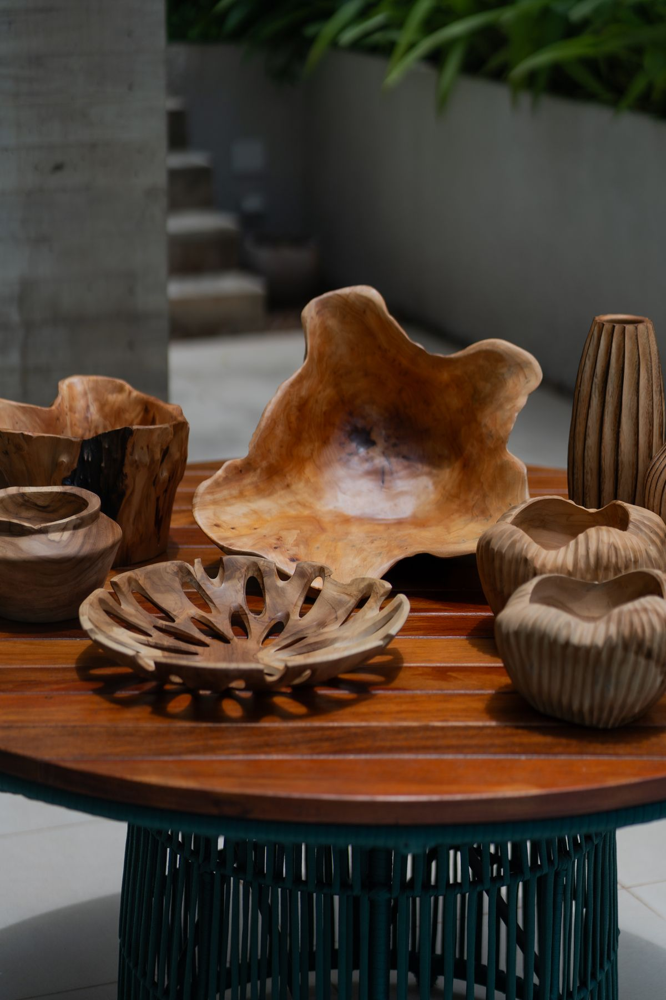
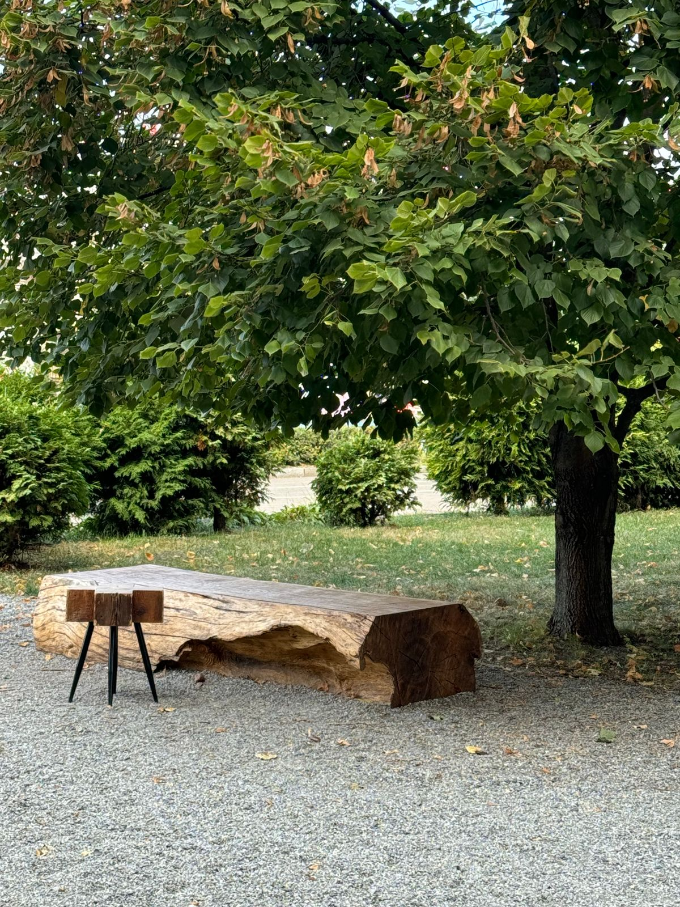
Stand-in photos for now. They'll be replaced with pieces from the shop as they're photographed.